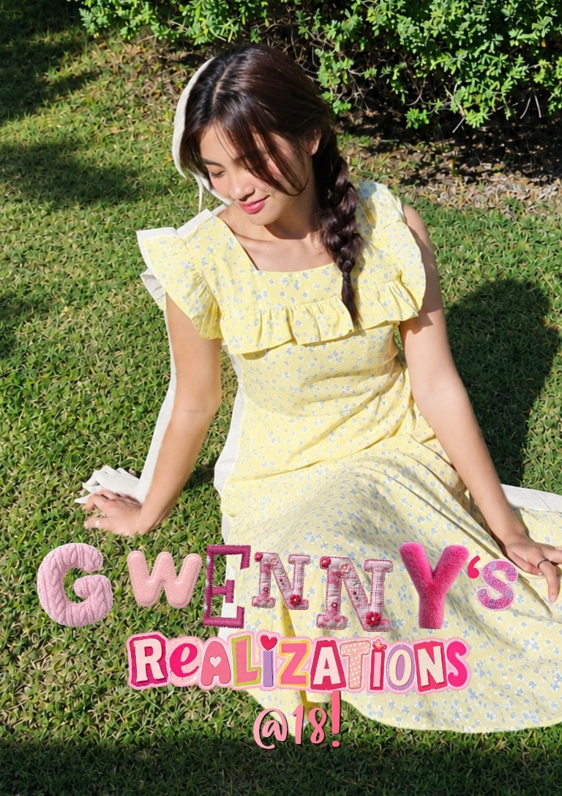

Made with creativity
Inspiration, little projects, and the things that make me want to make something of my own.
A little hello, a little whimsy
Hi, I’m Gwenny! Welcome to my little corner of the internet, where creativity meets curiosity and life becomes a collection of lessons worth sharing.

The heart of this space
This is my online scrapbook: a place for the ideas I’m exploring, the lessons I’m learning, and the everyday moments that make life feel a little more meaningful.
Inspiration, little projects, and the things that make me want to make something of my own.
Honest reflections and the lessons I’m collecting as I figure things out along the way.
Small joys, passing curiosities, and snapshots from my little corner of the world.
Let's be internet friends
01 — 03TikTok opens in a new tab. The other links are on their way.